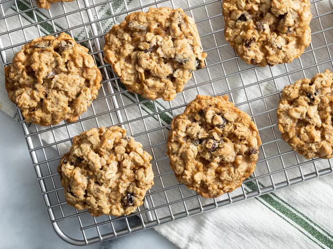

Oatmeal Raisin Cookie

These soft and chewy oatmeal raisin cookies are incredibly easy to make and are very tasty.
Ingredients
- 3/4 cup butter, softened
- 3/4 cup white sugar
- 3/4 cup packed light brown sugar
- 2 large eggs
- 1 teaspoon vanilla extract
- 1 1/4 cups all-purpose flour
- 1 teaspoon baking soda
- 3/4 teaspoon ground cinnamon
- 1/2 teaspoon salt
- 2 3/4 cups rolled oats
- 1 cup raisins